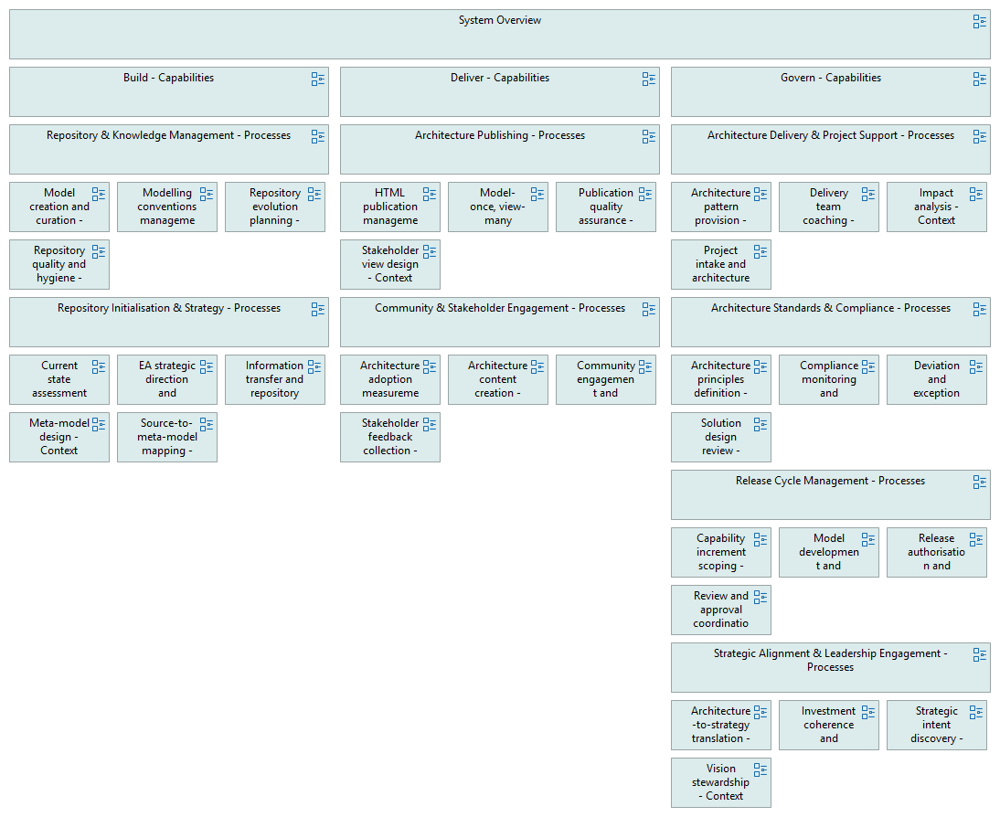

Heatmap - Processes
(
)

generated_by
build_archi_xml.py::gen_heatmap_processes_view
generator_path
pedro/capabilities/build_archi_xml/build_archi_xml.py
run_at
2026-07-16T15:11:45
model_code
EAOPS
view_type
nav_heatmap_processes
System Overview
Build - Capabilities
Repository & Knowledge Management - Processes
Model creation and curation - Context
Modelling conventions management - Context
Repository evolution planning - Context
Repository quality and hygiene - Context
Repository Initialisation & Strategy - Processes
Current state assessment - Context
EA strategic direction and roadmap - Context
Information transfer and repository seeding - Context
Meta-model design - Context
Source-to-meta-model mapping - Context
Deliver - Capabilities
Architecture Publishing - Processes
HTML publication management - Context
Model-once, view-many execution - Context
Publication quality assurance - Context
Stakeholder view design - Context
Community & Stakeholder Engagement - Processes
Architecture adoption measurement - Context
Architecture content creation - Context
Community engagement and dialogue - Context
Stakeholder feedback collection - Context
Govern - Capabilities
Architecture Delivery & Project Support - Processes
Architecture pattern provision - Context
Delivery team coaching - Context
Impact analysis - Context
Project intake and architecture scoping - Context
Architecture Standards & Compliance - Processes
Architecture principles definition - Context
Compliance monitoring and reporting - Context
Deviation and exception management - Context
Solution design review - Context
Release Cycle Management - Processes
Capability increment scoping - Context
Model development and semantic validation - Context
Release authorisation and publication - Context
Review and approval coordination - Context
Strategic Alignment & Leadership Engagement - Processes
Architecture-to-strategy translation - Context
Investment coherence and portfolio sequencing - Context
Strategic intent discovery - Context
Vision stewardship - Context